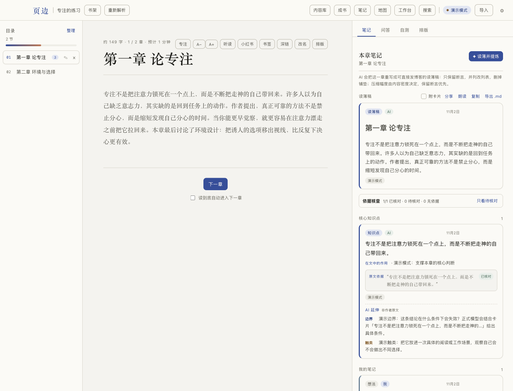
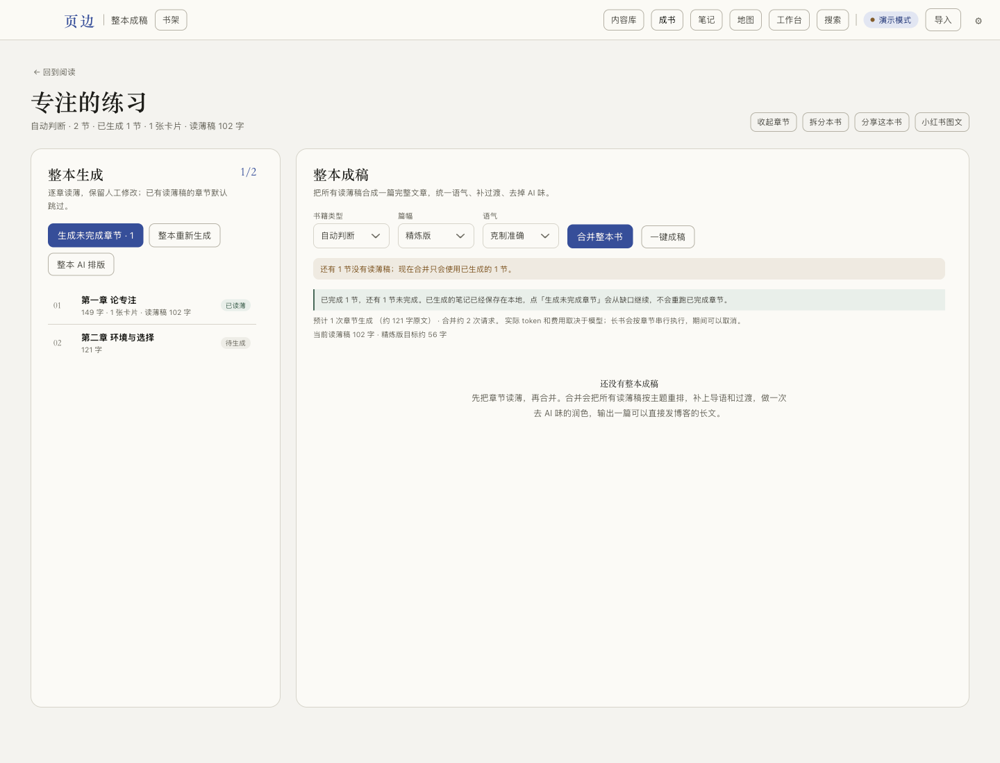
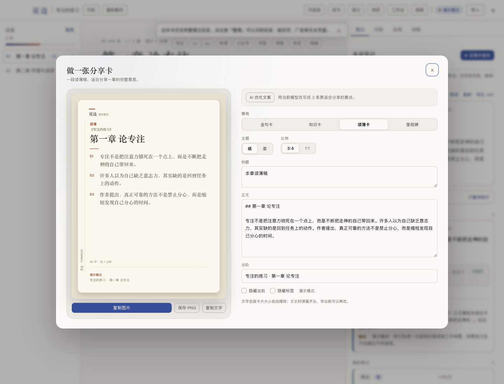

页边 ThinRead 用户手册
适用于 macOS 桌面版 · 小范围内测版本 · 未签名、未公证
最后更新：2026-11-03
页边是一个本地优先的 AI 读书笔记桌面应用。它把一章正文读薄成可发布的稿子，再从稿子里提炼核心卡片，最后把章节、卡片和跨书关联整理成文章、分享卡或小红书图文。
这份手册按“第一次打开 → 导入一本书 → 配好模型 → 生成笔记 → 成稿与分享”的顺序写。你也可以直接跳到需要的章节。
目录
- 先看这里
- 安装与启动
- 五分钟跑通演示
- 接入模型与申请 API Key
- 导入书与划线
- 阅读
- 笔记与 AI 读薄
- 整本成书与导出
- 分享卡、小红书图文与播客
- 知识地图与人物关系
- 阅读统计与周复盘
- 听读与音色
- 搜索与内容库
- 数据、备份与隐私
- 常见问题
- 快捷键与术语
- 反馈与诊断
1. 先看这里
1.1 它解决什么问题
普通阅读器留下的是划线和书签；页边希望留下的是能继续使用的东西：
- 一篇保留作者断言、可以直接继续改的读薄稿；
- 5–25 张写清“作用 + 原文依据 + 有限延伸”的核心卡片；
- 一张把概念、人物和跨书笔记连起来的知识地图；
- 可以导出或分享的 Markdown、HTML、PDF、发布包、分享卡和小红书图文。
1.2 本地优先，但模型不是本地
需要分清两件事：
- 书、笔记、向量索引、备份保存在本机，不经过页边的服务器。
- 生成笔记、成稿、问答、播客脚本时，相关正文会发送给你配置的模型服务商。
- 使用 Edge、Beatra 或 OpenAI 兼容 TTS 时，朗读文本会发送给对应语音服务。
- 演示模式只使用应用内置样例，不联网、不需要 Key。
- 使用 本地 Ollama 时，文本不出设备。
如果你不能把书稿发给第三方模型，请不要配置在线模型，或改用本地 Ollama。
1.3 三种使用方式
| 方式 | 是否需要 Key | 适合 |
|---|---|---|
| 演示模式 | 不需要 | 第一次看流程、确认界面是否符合预期 |
| 在线模型 | 需要对应服务商 Key | 正式读薄、成稿、问答、工作台 |
| 本地 Ollama | 不需要云端 Key | 不希望书稿离开设备，且本机有足够显存/内存 |
2. 安装与启动
2.1 安装 macOS 版本
- 下载
ThinRead.app或包含它的压缩包。 - 把
ThinRead.app拖到“应用程序”文件夹。 - 第一次打开时，在 Finder 里右键 → 打开，不要直接双击。系统会提示“无法验证开发者”，这是未签名版本，选择“打开”即可。
- 如果系统提示应用已损坏，可以在终端执行：
xattr -dr com.apple.quarantine /Applications/ThinRead.app
然后再次右键打开。
当前版本没有签名、没有公证，也没有自动更新。只建议在自己的电脑或小范围可信人群中安装。
2.2 从源码运行
要求 Node.js >= 22、pnpm 10+：
pnpm install
pnpm dev
构建：
pnpm build
pnpm pack # 生成未签名 .app 目录
pnpm dist:mac # 生成 macOS 安装包
2.3 第一次启动
第一次启动是空书架。你可以：
- 点右上角「导入」导入一本 EPUB / PDF / MOBI / DOCX / HTML / Markdown / TXT；
- 导入仓库自带的
samples/sample.epub先试； - 保持右上角「演示模式」，不需要 Key 就能看到完整生成流程。
2.4 数据放在哪
macOS 默认数据目录：
~/Library/Application Support/reading-notes/
里面主要有：
reading-notes.db：SQLite 主库；books/：导入的原始书文件和图片；settings.json：模型、音色、备份等设置；backups/：备份 zip、元数据和按内容去重的书文件 blob；ai-traces/：模型调用耗时与 token 记录，不含完整正文。
3. 五分钟跑通演示
第一次在没有书的书库启动时，应用会显示 3 步引导：导入示例书 → 看一次演示生成 → 配置真实模型。关掉后可以在「设置 → 新手引导」重新打开。
- 打开应用，确认右上角显示「演示模式」。
- 点「导入」，选择
samples/sample.epub或自己的一本书。 - 在书架点开这本书。
- 在右侧「本章笔记」点「✦ 读薄并提炼」。
- 等待生成完成，查看读薄稿、核心卡片、原文依据和报告。
- 点顶部「成书」，查看章节状态、篇幅、语气和合并入口。
- 点「分享」或「小红书」查看导出效果。
演示模式的引用是固定样例，不能当作真实原文校验。正式使用前请按下一章配置真实模型。
4. 接入模型与申请 API Key
4.1 Key 存在哪里
打开右上角「设置」→「模型服务商」：
- 选择服务商；
- Base URL 和默认模型会自动填入预设；
- 粘贴 API Key；
- 点「测试连接」；
- 点「保存」。
Key 使用 macOS 系统钥匙串加密后保存在 settings.json，不会以明文写入数据库。设置页只显示末尾四位提示，例如 ••••2b4c。
4.2 申请 Key 的通用流程
不同服务商的控制台界面会变，但流程基本一致：
- 打开下表中的 Key 申请页。
- 注册/登录，完成手机号或邮箱验证。
- 进入「API Keys」「API 密钥」「密钥管理」一类页面。
- 新建一个 Key，名字可以填
ThinRead。 - 立即复制。多数服务商只显示一次完整 Key。
- 回到页边「设置 → 模型服务商」，选择对应供应商，粘贴 Key，保存。
- 点「测试连接」。失败时先看第 15 章的 401 / 404 / 429。
4.3 供应商对照表
| 供应商 | Key 申请页 | Base URL（预设） | 说明 |
|---|---|---|---|
| DeepSeek | https://platform.deepseek.com/api_keys | https://api.deepseek.com |
中文长文本性价比高；/v1 兼容地址也可用，模型以控制台为准 |
| 智谱 GLM | https://bigmodel.cn/usercenter/proj-mgmt/apikeys | https://open.bigmodel.cn/api/paas/v4 |
OpenAI 兼容；中文书稳定 |
| Anthropic Claude | https://platform.claude.com/settings/keys | 留空使用官方端点 | 长文本和写作质量好；费用相对高 |
| OpenAI | https://platform.openai.com/api-keys | https://api.openai.com/v1 |
也可以填任意 OpenAI 兼容网关 |
| Moonshot Kimi | https://platform.kimi.com/console/api-keys | https://api.moonshot.cn/v1 |
国际版改成 https://api.moonshot.ai/v1 |
| 阿里云百炼 | https://bailian.console.aliyun.com/cn-beijing/model/settings/api-key | https://dashscope.aliyuncs.com/compatible-mode/v1 |
北京地域兼容地址；新账号建议用业务空间专属域名 |
| OpenRouter | https://openrouter.ai/keys | https://openrouter.ai/api/v1 |
一个 Key 访问多家模型；模型 ID 需要带厂商前缀 |
| 本地 Ollama | https://ollama.com/download | http://localhost:11434/v1 |
不需要 Key；先在本机安装并启动 Ollama |
表中的 Base URL 是应用预设值。不同账号、区域或网关可能不同，以服务商控制台文档为准。如果预设和文档不一致，以文档为准手动修改。
4.4 逐家说明
DeepSeek
- 打开 https://platform.deepseek.com/api_keys
- 登录后创建 API Key。
- 页边设置里选择「DeepSeek」，Base URL 使用
https://api.deepseek.com；https://api.deepseek.com/v1也可以。 - 模型填控制台当前可用的模型 ID；预设中的名称只是示例，服务商会更新模型。
- 先充少量余额，跑一章「快速」档确认可用，再跑整本。
适合：中文非虚构、逐章读薄、成本敏感。
智谱 GLM
- 打开 https://bigmodel.cn/usercenter/proj-mgmt/apikeys
- 创建 API Key。
- 页边选择「智谱 GLM」，Base URL 保持
https://open.bigmodel.cn/api/paas/v4。 - 模型填控制台的模型编码。
适合：中文书籍、希望国内网络稳定。
Anthropic Claude
- 打开 https://platform.claude.com/settings/keys
- 创建 Key。
- 页边选择「Anthropic Claude」，Base URL 留空。
- 模型填控制台可用的 Claude 模型 ID。
适合：长文写作、成稿润色；成本较高，建议只给成稿任务单独指定。
OpenAI
- 打开 https://platform.openai.com/api-keys
- 创建 Secret Key。
- 页边选择「OpenAI」，Base URL
https://api.openai.com/v1。 - 如果使用第三方 OpenAI 兼容网关，把 Base URL 换成网关地址，模型填网关支持的 ID。
适合：已有 OpenAI 账号，或使用兼容网关。
Moonshot Kimi
- 打开 https://platform.kimi.com/console/api-keys
- 创建 Key。
- Base URL 使用
https://api.moonshot.cn/v1；国际版改成https://api.moonshot.ai/v1。控制台入口现在是 platform.kimi.com。 - 模型填控制台模型 ID。
适合：长上下文中文材料。
阿里云百炼
- 打开 https://bailian.console.aliyun.com/cn-beijing/model/settings/api-key
- 创建 API Key。
- 页边选择「阿里云百炼」，北京地域 Base URL 使用
https://dashscope.aliyuncs.com/compatible-mode/v1；新账号建议改成控制台里的业务空间专属域名。 - 模型填百炼控制台的模型名。
适合：已有阿里云账号，使用通义系列模型。
OpenRouter
- 打开 https://openrouter.ai/keys
- 创建 Key，并按需充值。
- 页边选择「OpenRouter」，Base URL
https://openrouter.ai/api/v1。 - 模型 ID 要带厂商前缀，例如控制台里的
anthropic/...、openai/...。
适合：一个 Key 对比多家模型。注意 OpenRouter 自身也会计费。
本地 Ollama
- 从 https://ollama.com/download 安装 Ollama。
- 终端执行
ollama serve，或打开 Ollama 应用。 - 拉取一个模型，例如
ollama pull qwen3（以 Ollama 模型库当前名称为准）。 - 页边设置选择「本地 Ollama」，Base URL
http://localhost:11434/v1，模型填刚刚拉取的名称。 - 不需要 API Key。
适合：书稿不能离开设备、已有足够显存/内存。速度取决于本机硬件。
4.5 任务模型覆盖
设置里有三个可选覆盖：
- 读薄模型：逐章读薄、卡片、回查；
- 成稿模型：整本合并、润色、去 AI 味；
- 工作台模型：问答、事实核查、人物关系、播客脚本等。
留空表示使用全局模型。常见做法：
- 读薄用便宜、稳定的中文模型；
- 成稿换更强的模型；
- 工作台按需使用长上下文模型。
Base URL 和 Key 仍使用上面的全局服务商，覆盖只改模型 ID。
4.6 测试连接与常见错误
- 401 / 403：Key 错、过期、被删除，或 Base URL 不是同一家服务商。
- 404 / model not found：模型 ID 不存在，去控制台复制当前 ID。
- 429：触发限流或余额不足；等待、降并发、换模型。
- 连接超时：网络/代理/网关不可达；检查 Base URL 是否能从本机访问。
- 测试通过但生成失败：可能是模型不支持长上下文、输出格式不兼容，或该模型被服务商下线。
4.7 成本控制
- 先用「快速」档跑一章，确认质量和费用。
- 「标准」档会多做回查和卡片延伸；「精读」档再多一轮细节回查。
- 同一章、同一模型、同一档位的结果会按内容哈希缓存 14 天，重复生成通常不再消耗 token。
- 需要重新生成时，用「强制重新生成」跳过缓存。
- 整本生成会按章节串行执行，长书可能消耗大量 token；建议先用一章估算。
- 读薄、成稿、工作台可以分别指定模型，把便宜模型用在读薄上。
- 在服务商控制台设置余额提醒或月度上限；页边本身不代管额度。
- 点击「生成未完成章节」「整本重新生成」或「一键成稿」前，应用会弹出确认，列出本次会处理的章节数和请求数，并提示长书的耗时与 token 消耗。
5. 导入书与划线
5.1 电子书
支持 EPUB、PDF、MOBI、AZW3、DOCX、HTML、Markdown、TXT。DRM 加密的电子书不能导入。
导入后可以在「整理」里：
- 自动识别目录、版权页、广告、索引等非正文页；
- 手动隐藏/恢复章节；
- 拆分合并后的书；
- 合并重复导入的同名书。
删除的章节会进入章节回收站，保留 30 天。
5.2 扫描版 PDF 与 OCR
普通 PDF 会先读文本层；扫描版需要 OCR：
- 在「导入」里选择扫描版 PDF；
- 设置起始页/结束页（留空表示整本，单次最多 300 页）；
- 开始后任务会进入右下角任务中心，可离开当前弹窗；
- 完成后回到书架打开。
OCR 只支持 macOS。页数越多耗时越长。
5.3 文本、网页与 HTML
- 粘贴文本：适合文章、专栏、笔记；
- 网页地址：抓取正文，去掉导航和广告，图片下载到本地；只支持公开 http/https；
- 本地 HTML：保留结构导入。
失败的图片会跳过，不会中断整篇导入。
5.4 微信读书、Kindle、Readwise
「导入 → 划线」支持：
- Readwise CSV 导出；
- Kindle
My Clippings.txt； - 微信读书复制的笔记文本，或导出的
.txt/.md/.html。
勾选「合并到同名书」时，书名和作者都匹配才会追加划线；不勾选会为每本书建立新书。重复划线会自动去重。
Readwise 也可以直接同步：
- 打开 https://readwise.io/access_token
- 复制 Access Token；
- 页边设置 →「Readwise API Token」粘贴并保存；
- 回到导入 →「同步 Readwise」。
6. 阅读

- 左侧目录切换章节；顶部显示章节进度和预计阅读时间。
- 「专注」隐藏顶栏、目录和侧栏。
A− / A+调整字号；主题在设置里全局切换。- 章末可以进入下一章；也可以在设置里打开「自动续读」，章尾会出现 3 秒倒计时。
- 「书签」在当前阅读位置加书签；「深链」复制当前章节定位。
- 选中正文会浮出操作条：高亮、划线、删除线、清除标记、问 AI、AI 边注、分享、朗读、复制。
- 标记按章节保存在本地，重开仍在。
7. 笔记与 AI 读薄
7.1 生成一章
- 打开一章，右侧切到「笔记」。
- 点「✦ 读薄并提炼」。
- 等待读薄、回查、卡片提炼和延伸完成。
- 查看报告：原文 → 读薄稿字数、压缩比、节数、卡片数、延伸数、审计补遗、用时、tokens。
- 读薄稿和卡片都可以编辑；人工修改后不会被下一次生成覆盖。
7.2 读薄稿
读薄稿不是摘要，而是按断言重写整章：
- 保留作者的主张、论证链、关键例子和边界；
- 删掉重复、铺垫和无关案例；
- 并列内容改成列表；
- 不插入来源标记，保持可发布。
报告里的「补遗（断言回查）」是回查发现但未写回正文的缺口，可以点开逐条查看。
7.3 核心卡片
每张卡片包含：
- point：一句话知识点；
- role：它在全文中的作用，支撑什么结论；
- evidence：原文依据；
- section：所属小节；
- concepts：术语；
- importance：1–5；
- divergences：最多 3 条边界 / 跨书 / 触类延伸。
原文依据必须能在本章逐字找到。找不到时，应用会尝试回原文匹配最接近的整句；仍然找不到就不保存引用，不会把模型改写过的句子伪装成“原文”。
7.4 生成档位与缓存
| 档位 | 行为 | 适合 |
|---|---|---|
| 快速 | 跳过断言回查和卡片延伸 | 先看结构、控成本 |
| 标准 | 读薄 + 回查 + 卡片 + 延伸 | 日常默认 |
| 精读 | 额外一轮细节回查 | 重要章节、需要更细校对 |
同一章、同一模型、同一档位会命中内容哈希缓存。报告会显示「缓存命中」和节省的 token；需要重跑时点「强制重新生成」。
7.5 读薄失败或降级
报告出现「这次生成不完整」时，说明某些步骤失败，可能保留了原文或用了本地兜底卡片。处理顺序：
- 先看失败步骤和错误信息；
- 点「重新生成」；
- 换更稳定的模型；
- 缩短章节或改用快速档；
- 仍然失败时导出诊断包反馈。
8. 整本成书与导出

8.1 生成未完成章节
「成书」页会列出每章状态：
- 已有读薄稿的章节默认跳过；
- 点「生成未完成章节」只补缺口；
- 点「整本重新生成」会替换所有未人工修改的 AI 笔记，操作前会确认；
- 长书按章节串行，右下角可取消。
8.2 合并成稿
- 先确保有读薄稿；
- 选择书籍类型、篇幅（精炼/完整）、语气；
- 点「合并整本书」或「一键成稿」；
- 等待合并、补过渡、去 AI 味；
- 成稿可以继续编辑，也可以重新合并。
8.3 导出
- Markdown：读薄稿或整本成稿；
- 自包含 HTML：分享页，含封面、目录锚点、OG 元信息；
- 排版 PDF：通过 Electron 打印；
- 发布包：
index.html、封面、citation、notes.md、上传说明； - 分享这本书：生成分享卡或发布页。
发布包不依赖外部字体、脚本或图片，可以直接放到静态托管或离线打开。发布封面支持纸色、墨色、极简蓝三种样式。
9. 分享卡、小红书图文与播客

9.1 分享卡
入口：笔记卡片「分享」、读薄稿工具栏「分享」、成书页「分享这本书」。
- 模板：金句卡、知识卡、读薄卡、整本书、里程碑；
- 主题：纸、墨；
- 比例：3:4、1:1；
- 支持复制图片、保存 PNG、复制文字；
- 「AI 优化文案」会把当前内容改写成标题 + 3 条要点；
- 读薄卡默认把正文提炼成 3–4 条要点，不再整段搬运。
9.2 小红书图文
入口：阅读器章节头部「小红书」或成书页「小红书图文」。
- 范围：这一章 / 整本书；
- 篇幅：全部 / 精简 3 条；
- 主题：纸 / 墨；
- 封面标题可改；
- 自动生成封面、内容页和结尾；
- 超过 18 页会提示拆分；
- 支持预览、复制当前页、保存当前页、保存全部 PNG；
- 「用 AI 检查漏点」会把原章正文和已有卡片对比，补漏只进入本次图文，不写回笔记。
9.3 双人播客
入口：工作台 → 双人播客 → 运行。
- 生成 A/B 对谈稿，不是文章摘要；
- 生成后点「播放播客」，用听读面板按 A/B 角色朗读；
- 只朗读带 A/B 标记的对白；标题、简介、角色说明、shownotes、表格、章节出处会被跳过；
- 没有手动选音色时，优先 Beatra，其次 OpenAI 兼容 TTS，再退回 Edge。
10. 知识地图与人物关系
10.1 知识地图
入口：顶部「地图」。
- 节点来自卡片的概念；
- 可以只看跨书概念；
- 点击节点查看关联笔记；
- 支持搜索、重新布局、缩放、导出图片、复制 Mermaid；
- 概念共现关系由本地索引和卡片标签生成。
10.2 人物关系图
入口：地图 → 人物关系。
- 选择一本书；
- 点「生成人物关系图」；
- 应用会抽取人物、组织、地点、事件和关系；
- 点击节点查看关系、出处；
- 可以导出 Markdown、Mermaid、PNG，或全屏查看。
历史、传记、侦探小说最适合；非虚构书也会把作者、人物、机构、概念连成图。生成会调用当前工作台模型，长书可能需要几分钟，可取消。
11. 阅读统计与周复盘
入口：书架右上角「阅读统计」。
- 阅读器每 15 秒累计一次本地阅读时间；
- 统计今日、本周、月度、年度、累计、按书耗时；
- 连续阅读天数、最长连续、7/30/100 天里程碑；
- 每日目标完成后会提示；
- 月度/年度/对比图可以导出 PNG；
- 本月数据可以复制 CSV；
- 本周复盘可以跳到工作台，或直接存成笔记（按 ISO 周归档，重复保存更新同一条）；
- 「查看历次周复盘」支持按书、按年份筛选。
阅读统计只存在本机，最多保留 90 天。
12. 听读与音色
入口：阅读器顶部「听读」，或笔记工具栏「朗读」。
12.1 基本播放
- 逐句高亮，点击任意一句从那里开始；
- 上一句/下一句、暂停、0.8–1.5 倍速；
- 带
A：/B：的对白按角色分配音色； - 可以一次合成整章/整篇为 WAV 并保存。
12.2 四类音色
| 引擎 | 成本 | 说明 |
|---|---|---|
| 系统语音 | 免费 | 离线、零依赖；机械感明显 |
| Edge 在线 | 免费 | 需要联网，文本发到 Microsoft；接口非官方，可能限流；失败自动重试一次并回退系统 |
| Beatra | 付费，按字符 | 自然度最高；需要 Device Token；首次播放前会再次确认 |
| OpenAI 兼容 TTS | 按服务商计费 | 任何兼容 /audio/speech 的服务；设置里填 Base URL、模型、A/B 音色、Key |
默认顺序：Beatra → OpenAI 兼容 TTS → Edge。系统语音只做兜底。
12.3 配置 Beatra
- 安装 Beatra Skill（如果已在 Claude Code 使用 Beatra 可跳过）；
- 终端运行：
python3 ~/.claude/skills/@beatra-ai/ai-podcast-voiceover/scripts/authorize.py
- 登录后点 Allow，直到终端显示
Beatra is ready； - 页边设置 →「Beatra AI 配音」→「导入本机授权」；
- 点「测试 Beatra」确认音色列表；
- 听读面板选择「Beatra 付费」，选 A/B 中文音色。
Token 保存在本机 ~/.beatra/credentials.json，不要发给别人。Beatra 按字符计费。
12.4 配置 OpenAI 兼容 TTS
设置 →「OpenAI 兼容 TTS」：
- Base URL：例如
https://api.openai.com/v1； - 模型：例如
gpt-4o-mini-tts； - A/B 音色：例如
alloy、verse； - API Key。
任何兼容 /audio/speech 的服务都可以，例如 OpenAI、SiliconFlow 或自建网关。文本会发到该服务，按服务商计费。
13. 搜索与内容库
- 搜索：顶部搜索框支持全文搜索；如果启用了语义索引，也可以按意思找相近笔记。
- 内容库：汇总报告、对话、出题、章节笔记、AI 排版、整本成稿、整理建议、PDF 页、人物关系图等生成结果。
- 可以按类型、状态（使用中/已采用/已归档/回收站）筛选、搜索、分页。
- 生成内容可以复制、导出、应用、归档、删除；删除进入回收站，之后可以恢复。
14. 数据、备份与隐私
14.1 本地数据
- 主库：
reading-notes.db； - 书文件：
books/； - 设置：
settings.json； - 备份：
backups/； - 模型调用记录：
ai-traces/。
14.2 备份
设置 →「数据备份」：
- 「立即备份」创建手动备份；
- 「导出最新备份」导出 zip；
- 「打开备份目录」查看本地备份；
- 恢复前会自动再做一份安全备份；
- 书文件按内容哈希去重，多份备份共享一份；
- 恢复时校验每个书文件的 SHA-256，不只检查大小；
- 合并、拆分、重新解析、删除书籍前会自动备份。
14.3 恢复与损坏库
- 恢复使用 staging + 原子 rename，失败会回滚；
- 如果上次恢复中途崩溃，启动时会自动回滚；
- 如果数据库完整性校验失败，会保留损坏文件（
.corrupt-*），并尝试恢复最近一份备份； - 没有备份时保留损坏文件并报错，不会静默删库。
14.4 隐私边界
- 书、笔记、向量索引和备份保存在本机；
- 生成时，相关章节正文会发送给你选择的模型服务商；
- 使用在线 TTS 时，朗读文本会发送给语音服务；
- 演示模式不联网；
- 诊断包包含版本、系统信息、日志和脱敏后的模型设置，不包含书籍正文、笔记内容、提示词或 API Key。
如果书稿敏感，请使用本地 Ollama，或不要配置在线模型/在线音色。
15. 常见问题
15.1 应用打不开，提示“无法验证开发者”
这是未签名版本。右键 → 打开；如果提示已损坏，执行：
xattr -dr com.apple.quarantine /Applications/ThinRead.app
15.2 提示 401 / 403
- Key 是否复制完整；
- Key 是否被删除/过期；
- Base URL 是否和供应商匹配；
- 是否把 OpenAI Key 填到了 Anthropic；
- 保存后是否点了「测试连接」。
15.3 提示 404 / 模型不存在
去服务商控制台复制当前模型 ID。应用预设里的模型名可能随服务商更新而过时。
15.4 提示 429 / 余额不足
等待限流恢复、降低并发、换模型，或在服务商控制台充值/设置额度。
15.5 生成很慢或很贵
- 先用快速档跑一章；
- 长章节会切块并发，但仍受模型速度影响；
- 同一章同模型同档位会命中缓存；
- 整本生成前先估算：读薄、回查、卡片、延伸都会消耗 token；
- 不需要延伸时用快速档。
15.6 卡片很少，或者出现“这次生成不完整”
模型可能返回了无法解析的卡片，应用会走本地兜底并标记降级。点重新生成，或换一个更稳定的模型。
15.7 引用显示“未校验”
说明模型给出的句子没有在本章原文里逐字找到。应用不会伪造“已校验”。可以：
- 重新生成；
- 换模型；
- 手动编辑卡片；
- 直接不保留这条引用。
15.8 PDF 导入后没有文字
可能是扫描版 PDF，需要用 OCR；DRM 电子书无法导入。
15.9 Readwise 同步失败
- Token 从 https://readwise.io/access_token 获取；
- 检查 Token 是否过期；
- 设置里点「测试 Readwise」；
- 网络是否能访问 Readwise。
15.10 播客/听读没有声音
- 系统语音：检查 macOS 输出设备和系统语音；
- Edge：需要联网，可能限流，失败会自动重试并回退系统；
- Beatra：检查 Device Token 和余额；
- OpenAI TTS：检查 Base URL、模型、音色和 Key；
- 首次播放前确认计费提示。
15.11 播客读到了非对白内容
应用会跳过标题、简介、角色说明、shownotes、表格、章节出处和舞台说明；如果是命名主持（例如“小页/小边”），会尝试识别。仍然读错时，检查脚本是否符合 A： / B： 或“名字：”格式。
15.12 数据恢复后不对
先不要继续写入。打开设置 → 数据备份，确认恢复的是哪一份；恢复前应用会自动做安全备份，可以从备份目录找回上一份。
15.13 Windows / Linux 能用吗
当前只验证 macOS，未发布 Windows/Linux 安装包。源码是 Electron，但需要自行适配和测试。
16. 快捷键与术语
16.1 阅读快捷键
| 按键 | 作用 |
|---|---|
← / → 或 j / k |
上一章 / 下一章 |
f |
进入/退出专注阅读 |
b |
在当前阅读位置加书签 |
g / G |
跳到章首 / 章尾 |
? |
打开快捷键帮助 |
Esc |
关闭选区或退出专注 |
16.2 术语
- 读薄：按断言重写整章，不是摘要。
- 核心卡片：从读薄稿提炼的知识点，带作用、依据、延伸。
- 断言回查：检查读薄稿有没有漏掉作者主张。
- 有限延伸：边界、跨书、触类，最多 3 条。
- 缓存命中：同章、同模型、同档位直接复用上次结果，0 token。
- 发布包：可直接上传静态托管的 HTML、封面、引用和 Markdown 原稿。
- 演示模式：固定样例，不联网，不需要 Key。
17. 反馈与诊断
遇到问题时：
- 先看界面上的错误信息和报告里的降级步骤；
- 设置 → 数据备份 →「导出诊断包」；
- 诊断包包含版本、系统信息、日志和脱敏后的模型设置，不包含书籍正文、笔记内容、提示词或 API Key；
- 把诊断包和复现步骤一起反馈。
如果问题涉及模型输出，请同时说明：供应商、模型 ID、生成档位、章节长度、是否命中缓存。
页边 · 把一本书读成自己的。
页边 ThinRead 用户手册 · 小范围内测版本 · 未签名、未公证